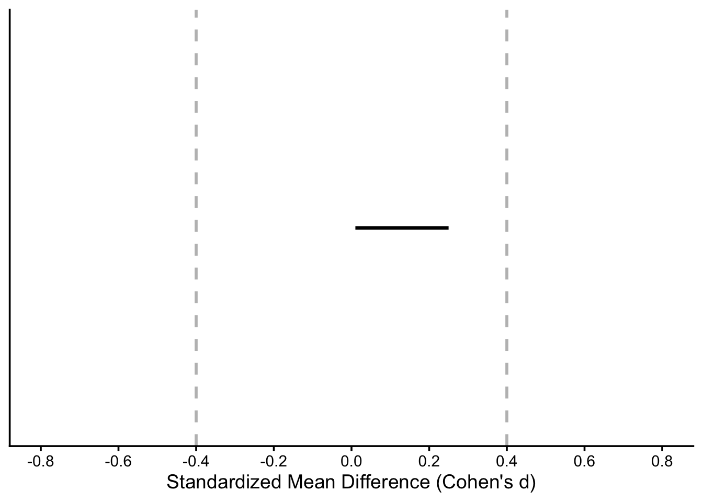

************
Welcome to faux. For support and examples visit:
https://debruine.github.io/faux/
- Get and set global package options with: faux_options()
************
So far, our goal has been to establish that groups or conditions were statistically significantly different. However, researchers might also be interested in demonstrating that two groups or conditions do not differ by a meaningful amount-that is, any difference is negligible or practically equivalent to zero. To assess this, researchers can use equivalence tests, which are designed to establish whether the observed difference fall within a predefined range of practical equivalence.
Importantly, to establish equivalence, researchers must first define the equivalence bounds based on the smallest effect size of interest (SESOI). The SESOI represents the smallest effect size considered meaningful for practical or theoretical reasons, and it should be specified in advance—ideally as part of the preregistration document. Briefly, an equivalence test consists of two one-sided tests, where the goal is to reject the presence of effects outside of the equivalence bounds. If both one-sided tests yield a significant p-value, researchers can claim that both groups or conditions are equivalent. Alternatively, if the 90% CI of the observed effect falls entirely within the equivalence bounds, equivalence can also be claimed.
For a detailed discussion on equivalence testing, readers are referred to Lakens (2017) and Lakens (2018). For a discussion on SESOI, readers are referred to Lakens (2022). For a practical, simulation-based approach to equivalence testing, readers are referred to Riesthuis (Riesthuis 2024).
Suppose a researcher hypothesizes that the difference in heart rate between intervention A and B will not exceed 5 bpm, corresponding to a Cohen’s ds of 0.2 (5/25 = 0.2). In this line of research, the SESOI has been set to ± 10, corresponding to a Cohen’s ds of 0.2 (10/25 = 0.4). This means that any observed difference between the two interventions smaller than 0.3 (in either direction) is considered practically equivalent—that is, not large enough to be meaningful in practice. As illustrated below, if the 90% CI entirely within the lower and upper bounds of the SESOI.
Warning: Using `size` aesthetic for lines was deprecated in ggplot2 3.4.0.
ℹ Please use `linewidth` instead.

Figure 7.1: The grey vertical lines represent the lower and upper bound of the SESOI corresponding to the region of equivalence. The horizontal black line represents the 90% CI of the observed effect.
Let’s conduct an a priori power analysis for an equivalence test with the following parameters:
res_t_TOST<-power_t_TOST(alpha =0.05, delta =5, # true difference in means sd =25, # standard deviation of the difference power =0.8, eqb =10, # set upper and lower bounds type ="unpaired")res_t_TOST
TOST power calculation
power = 0.8
beta = 0.2
alpha = 0.05
n = 155.9257
delta = 5
sd = 25
bounds = -10, 10
Approximately 156 participants per group would be required to reject the existence of effect sizes larger than ±0.2.
You can also use emmeans within Superpower to perform power analysis for equivalence tests in pairwise comparisons. This approach can be useful when researchers plan to use a factorial design and want to test both:
A hypothesis of no difference (equivalence) between interventions or conditions, and
A hypothesis of difference between other interventions or conditions
For example, suppose a researcher expects that the time of day of exposure to Intervention A does not affect its efficacy in reducing heart rate (i.e., morning vs evening are equivalent), but also expects that Intervention A and B differ their effects both in the morning and in the evening.
design_result<-ANOVA_design( design ="2b*2b", # study design (i.e., two-factor between-subject design) n =50, mu =c(60, 62, 67, 67), sd =10, labelnames =c("intervention", "A", "B", "time", "morning", "evening"), plot =TRUE)
Warning: `aes_string()` was deprecated in ggplot2 3.0.0.
ℹ Please use tidy evaluation idioms with `aes()`.
ℹ See also `vignette("ggplot2-in-packages")` for more information.
ℹ The deprecated feature was likely used in the Superpower package.
Please report the issue at
<https://github.com/arcaldwell49/Superpower/issues>.
Unlike ANOVA_power(), which performs multiple simulations to estimate power, ANOVA_exact() generates a single data set that exactly matches the properties specified in ANOVA_design().
This study design would have adequate power (>80%) to reject both null hypothesis of no difference between intervention A and B when compared at the same time of exposure.
Now let’s conduct the power analysis for the hypothesis of equivalence, specifically testing whether the efficacy of Intervention A is equivalent across different times of exposure.
simple_condition_effects<-emmeans(result$emmeans$emmeans, specs =~time|intervention)equivalence_power<-emmeans_power(pairs(simple_condition_effects, side ="equivalence", delta =5)[1]# select comparison of interest (Intervention A: morning vs. evening))equivalence_power|>kable(digits =1)|>kable_styling()
contrast
intervention
power
partial_eta_squared
cohen_f
non_centrality
time_evening - time_morning
intervention_A
32
0
0.1
2.3
With this study design, the equivalence test would have a power of 32 to establish equivalence, assuming 2 bpm difference in heart rate for Intervention A between morning and evening.
Because power is calculated from the squared t-value, power is only calculated correctly if the alternative hypothesis is true in the simulated data set. That is, the difference between the condition means is consistent with the tested directional hypothesis (smaller than delta).
The required sample size per group increases as the difference between the expected effect size and the SESOI decreases. This is because it becomes harder to statistically rule out effects that approach the boundaries of practical relevance. For example, if a researcher expects the true difference to be d = 0.2, but the SESOI is set at ±0.3, the test must reliably detect that the effect is not as large as ±0.3 — requiring a sufficiently precise estimate (i.e., a narrower confidence interval that exclude 0.3), which in turn requires a larger sample. This mirrors the logic of NHST: a study requires a larger sample size to detect d = 0.2 than to detect d = 0.4.
7.2 Minimum-effect tests
When using an equivalence test, the goal is to reject effect sizes larger than the SESOI to demonstrate equivalence between two interventions. In contrast, there are situations where researchers aim to do the opposite: to reject the presence of negligible effects and show that an observed effect is meaningfully large. This is the purpose of a minimum-effect test—to test whether the observed difference exceeds a predefined SESOI or the smallest effect size considered meaningful. In essence, an effect is considered meaningfully large when the entire confidence interval of the observed effect lies beyond the SESOI bounds—either above the upper bound or below the lower bound, depending on the hypothesis.
Readers are referred to Murphy and Brett (1999) for an introduction to minimum-effect tests and to and Riesthuis (2024) for a hands-on guide to using simulation-based approaches for implementing minimum-effect tests
Suppose a researcher hypothesizes that the difference between Intervention A and Intervention B will exceed a standardized mean difference of 0.4. In this line of research, the SESOI is set to ±0.2, meaning that any observed difference greater than 0.2 (in either direction) is considered practically meaningful. Therefore, the researcher uses a minimum-effect test to evaluate whether the observed effect exceeds this SESOI threshold, providing evidence that the effect is not only statistically significant but also of meaningful size.
Let’s define the parameters:
# Set parametersnsims<-1000# number of simulationssample_size<-c(50, 100, 150, 200, 250, 300)# sample size per groupmu1<-4# expected intervention A meanmu2<-0# expected intervention B meansd<-10# common SD lower_bound<--0.2# lower bound of SESOIupper_bound<-0.2# upper bound of SESOIalpha_level<-0.05
Let’s perform the simulations:
# For reproducibilityset.seed(050990)# Power simulation functionsimulate_power<-function(n){es_values<-replicate(nsims, {# Simulate raw datagroup_A<-rnorm(n, mean =mu1, sd =sd)group_B<-rnorm(n, mean =mu2, sd =sd)# Run minimum-effect testresult<-tsum_TOST( m1 =mean(group_A), m2 =mean(group_B), sd1 =sd(group_A), sd2 =sd(group_B), n1 =n, n2 =n, low_eqbound =lower_bound, high_eqbound =upper_bound, alpha =alpha_level, hypothesis ="MET"# MET = minimum-effect test)# check if CI excludes the upper or lower bound of the SESOIresult$effsize$lower.ci[2]>upper_bound|result$effsize$upper.ci[2]<lower_bound})mean(es_values)}# Run function for all sample sizespower_results<-tibble( n_per_group =sample_size, power =map_dbl(sample_size, simulate_power))# Return resultspower_results|>kable()|>kable_styling()
n_per_group
power
50
0.229
100
0.385
150
0.535
200
0.641
250
0.676
300
0.815
Lakens, Daniël. 2017. “Equivalence Tests: A Practical Primer for t Tests, Correlations, and Meta-Analyses.”Social Psychological and Personality Science, May. https://doi.org/10.1177/1948550617697177.
Lakens, Daniël, Anne M. Scheel, and Peder M. Isager. 2018. “Equivalence Testing for Psychological Research: A Tutorial.”Advances in Methods and Practices in Psychological Science 1 (2): 259–69. https://doi.org/10.1177/2515245918770963.
Murphy, Kevin R., and Brett Myors. 1999. “Testing the Hypothesis That Treatments Have Negligible Effects: Minimum-Effect Tests in the General Linear Model.”Journal of Applied Psychology 84 (2): 234–48. https://doi.org/10.1037/0021-9010.84.2.234.
Riesthuis, Paul. 2024. “Simulation-Based Power Analyses for the Smallest Effect Size of Interest: A Confidence-Interval Approach for Minimum-Effect and Equivalence Testing.”Advances in Methods and Practices in Psychological Science 7 (2): 25152459241240722. https://doi.org/10.1177/25152459241240722.